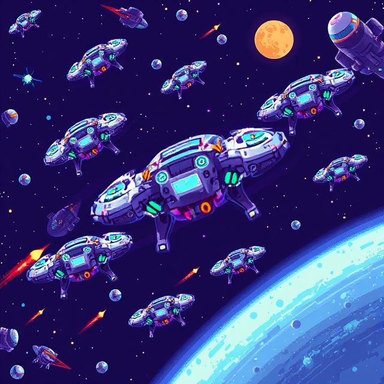

Technical Interests
Cosmic Motions
I am passionate about understanding the forces and movements that govern the universe. Learning more about cosmic motions allows me to contribute to the field of space science and gain insights that can be leveraged in astrophysics research.
Building Ideas into Facts
Bringing conceptual ideas to life and validating them with data is fascinating to me. This involves rigorous experimentation, analysis, and continuous learning to transform theoretical concepts into practical solutions.
Developing skill boosting games
Developing interactive and engaging games has always been a creative outlet for me. I love the combination of art, storytelling, and technical programming that game development entails, especially in designing immersive user experiences.
Swarm Intelligence
I see swarm intelligence as the key to unlocking the potential of coordinated robot and drone fleets in space, allowing them to work in unison to explore, analyze, and unravel the universe's deepest secrets.
AI in Fashion
Exploring how artificial intelligence can transform the fashion industry is an exciting frontier. I am intrigued by the possibilities AI offers in personalization, trend forecasting, and sustainable practices in the fashion world.
Robotics and Automation

I envision a future where advanced robotics plays a pivotal role in cosmology, enabling us to explore distant planets, analyze cosmic phenomena, gather data from unreachable areas. By merging robotics with space science, we can push the boundaries of our understanding, making groundbreaking discoveries that could refine our place in the universe.
Vedic Cosmology
I am inspired by Vedic Cosmology through the Srimad Bhagavatam, written by Vyasa Dev and translated by A.C.Bhaktivedanta Swami Prabhupada. It reveals the true cosmological order, offering profound insights into the universe's structure, conciousness, and spiritual dimensions, blending science with ancient wisdom.